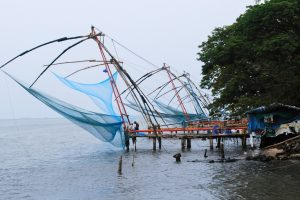

Areekkal Waterfalls

Areekkal falls is a must see beautiful place in Kochi, Its 35 kilometers away from the main city on the Ernakulam–Thodupuzha road. One can reach Areekkal falls within one hour travel from kochi main city
Bastion Bunglow

Built in the Indo-European style way back in 1667 AD, Bastion Bungalow get its name from its location on the site of the Stromberg Bastion of the old, Dutch fort
Bhoothathankettu
scenic dam site with boating facilities is situated in a vast virgin forest. It is a popular picnic sport with Salim Ali Bird Sanctuary near by.
Chinese Fishing Nets
A legacy of the trading connections between China and India many centuries ago. The long rows of chinese nets silhouetted against the sunset present a spectacular sight of Cochin’s waterfront
Chottanikkara Temple
A renowned temple of mother goddess Shakti Devi or Rajarajeshwari was known as SreeBhagavathi.Chottanikkara Devi is worshipped at the temple in three different forms: as MahaSaraswati (mother of knowledge) in the morning, draped in white; Maha Lakshmi (mother of wealth) at noon, draped in crimson; and as SreeDurga (mother of power) in the evening, decked in blue
Dutch Palace

This palace is located on the palace road in Mattancherry. It was constructed by the Portuguese. Later, they presented the palace to Veera Kerala Varma (1537-65), the king of Cochin.